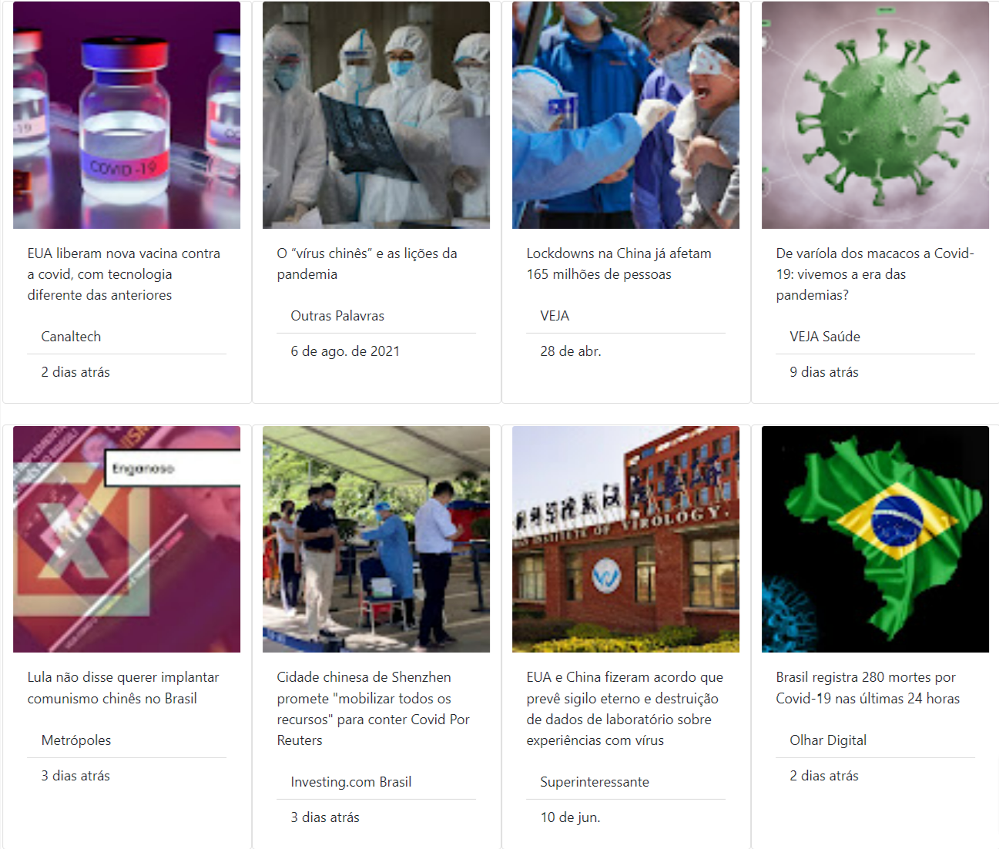
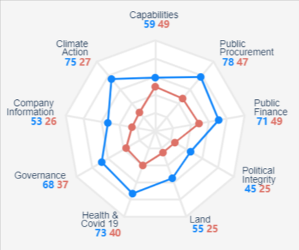
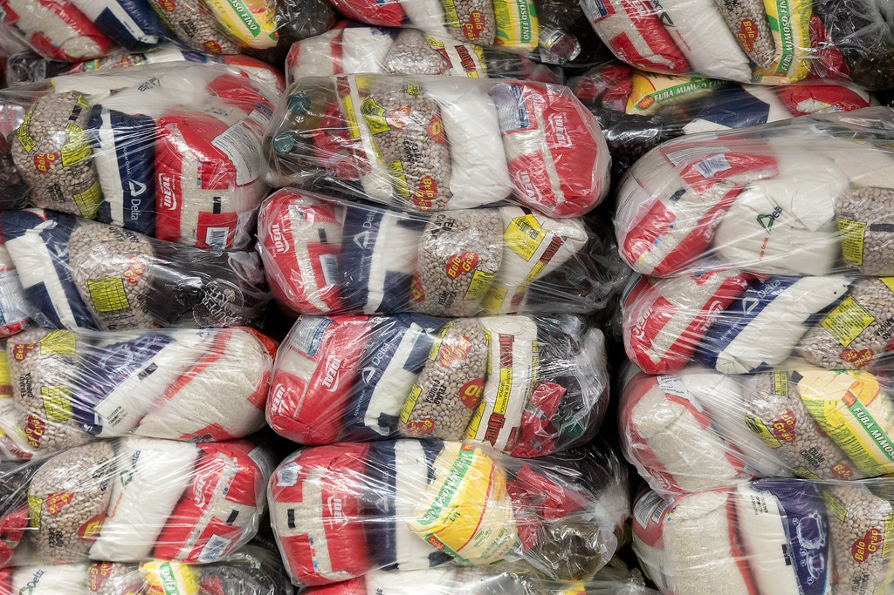

Projetos

Preconceito Asiático
Coleta e análise de notícias sobre ataques e discursos de ódio contra asiáticos nos primeiros anos da pandemia do coronavírus.

Tem cobertura aí?
Projeto exploratório com dados sobre a presença e volume de veículos jornalísticos pelo estados do Brasil.

Política e governança de dados no Brasil
Como dados para o bem público estão sendo usados aqui em relação ao mundo?.

Custo da cesta básica
A calculadora te diz qual era o valor médio da cesta básica no Brasil no seu ano de nascimento.